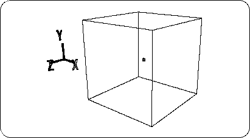

Return to previous page | Return to menu ｜ Go to next page
In this application section, we will explain mixed application modeling techniques that were not mentioned in the basic section. The theme is “automobile”.
Notes on description
In the text, [] indicates a menu command, and [] indicates a hierarchical (sub) menu.
Switches to the “Model” menu.
“F1” key: Model menu selection
[Get] → [Primitive] → [Cube]
When a dialog is displayed, enter 4 in “Length” (the length of one side of the square) and click “OK” to create a cube (Figure 3-1).

Caution
The small square displayed in the center of the cube represents the center of the object.
If no vertices are displayed,
[Show] → [Point]
Select to display vertices.
After confirming that the object is selected (the wire frame is displayed in white), based on this cube, use the 【Scale】 in OBJ mode to make a rough car I will shape it to the outer shape.